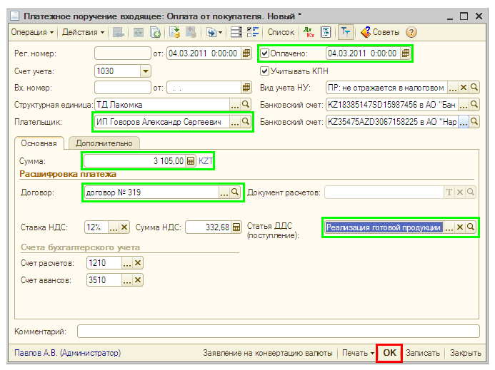

Поступление денежных средств от покупателя на расчетный счет организации
Поступление денежных средств на расчетный счет организации отражается в «1С:Бухгалтерии 8 для Казахстана» документом Платежное поручение входящее с видом операции оплата от покупателя.
- Создайте документ Платежное поручение входящее на основании документа Счет на оплату покупателю.
Для этого в списке документов Счет на оплату покупателю выделите созданный ранее документ и нажмите на кнопку  .
.
- Откроется форма нового платежного поручения. Часть реквизитов подставится в форму документа автоматически. Заполните остальные значения реквизитов документа так, как показано на рисунке:
 - В нижней части документа автоматически заполняются счета бухгалтерского учета — это счета расчетов с контрагентами, корреспондирующие со счетом 1030 по кредиту. Если указан счет авансов, например, счет 3510 «Краткосрочные авансы полученные», то при проведении документа будет определено состояние расчетов по договору, и поступившая оплата автоматически разделится на оплату и аванс. Если счет авансов не указан, то вся сумма оплаты будет отнесена на счет расчетов, например счет 1210 «Краткосрочная дебиторская задолженность покупателей и заказчиков». Оставьте заполненными оба счета.
ПРИМЕЧАНИЕ
Показать или скрыть в документе счета учета можно с помощью кнопки  в командной панели формы документа. в командной панели формы документа. |
- Для заполнения реквизита Статьи движения ден. средств выберите значение Реализация готовой продукции (товаров) в списке статей движения денежных средств, предварительно заполнив справочник с помощью кнопки Заполнить в форме списка справочника:

- Для подтверждении оплаты необходимо установить флажок Оплачено . Это означает, что при проведении документ сформирует бухгалтерские проводки. Дата справа от флажка — это дата, которой будет зарегистрирована в информационной базе хозяйственная операция.
- Проведите документ, для этого нажмите на кнопку
 в верхней командной панели документа.
в верхней командной панели документа.
- Чтобы просмотреть бухгалтерские проводки, сформированные документом, нажмите кнопку
 в командной панели формы документа и в открывшемся окне перейдите на закладку Бухгалтерский учет. Для того, чтобы просмотреть результат проведения документа по регистрам в виде отчета, нажмите на кнопку Отчет о движениях документа по регистрам.
в командной панели формы документа и в открывшемся окне перейдите на закладку Бухгалтерский учет. Для того, чтобы просмотреть результат проведения документа по регистрам в виде отчета, нажмите на кнопку Отчет о движениях документа по регистрам.
- Закройте форму документа Платежное поручение входящее. Для этого нажмите на кнопку Закрыть в нижней части формы документа.
Только что Вы научились оформлять поступление денежных средств от покупателя.
Из следующего раздела Вы узнаете, как оформить продажу товаров и выставить счет-фактуру.
Следующий раздел: «Продажа товаров: накладная и счет-фактура»